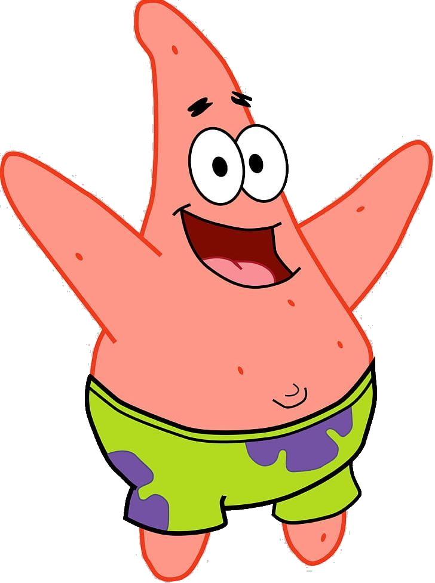
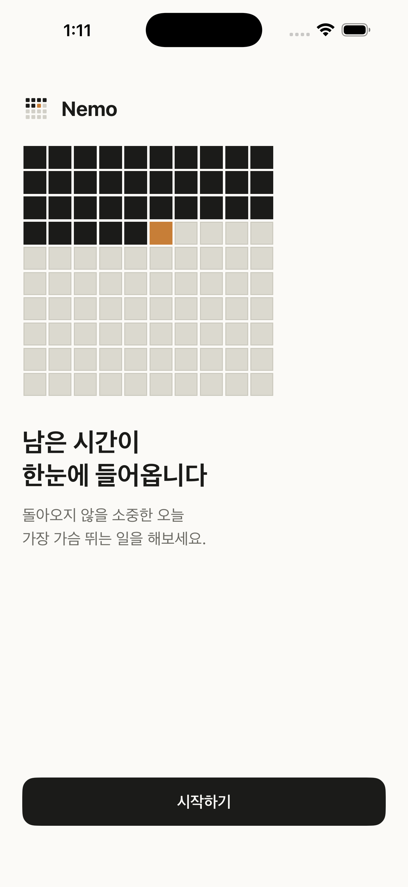
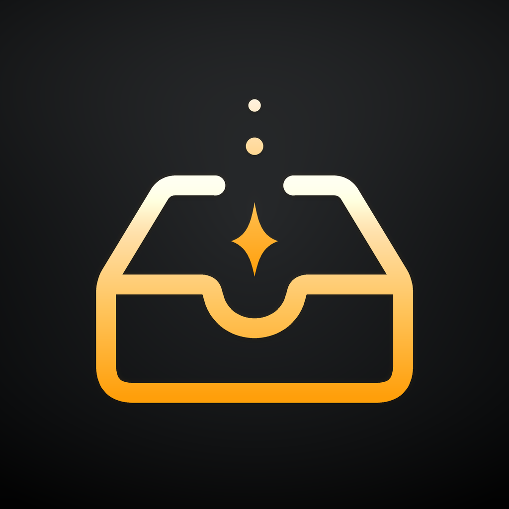

7년차 CRM마케터
Lim
Seungyong
창업을 하고 싶은 초보 빌더. 7년차 CRM마케터. 서울 거주, 89년생.
Intro
CRM에서
프로덕트로
넘어가는 중.
고객의 유입부터 행동 관찰, 서비스 디벨롭과 리텐션까지 이어지는 흐름을 다뤄왔습니다. 이제는 AI를 활용해 직접 서비스를 만들고, 아이디어를 검증하는 초보 빌더로 움직이고 있습니다.
- CRM마케터
- 정형 DB
- 데이터 분석
- 프로덕트 개발
- AI
- 러닝
- 커피

유입 → 행동 관찰 → 리텐션
AI로 서비스 만들기
About Me
관심사는 작게 시작해
제품으로 이어집니다.
프로덕트 개발
AI 활용법에 관심이 많고 관련 뉴스를 꾸준히 봅니다. 하네스, 프롬프트, 스킬, 플러그인에도 관심이 있습니다.
아이디어
AI로 몇 개의 프로덕트를 만들며 상품성 있는 아이디어의 중요성을 더 크게 느끼고 있습니다.
러닝
달리기를 즐긴 지 약 1년이 되었고, 주 5회 정도 달립니다. 하프마라톤 완주 경험이 있습니다.
커피
산미 있는 커피를 좋아합니다. 집에서 필터 드립으로 내려 마시며 여러 원두를 맛보는 재미를 즐깁니다.
Career
분석하고,
연결하고,
다시 붙잡기.
CRM
고객의 유입부터 행동 관찰, 서비스 디벨롭과 리텐션까지 이어지는 과정을 분석하고 개선합니다.
데이터 분석
SQL, Python, Tableau를 활용해 데이터와 비즈니스를 분석하고 마케팅 액션으로 연결합니다.
Why This Program
AI의 언어를 이해하고,
내 서비스를 만들기 위해.
AI의 진보
AI 성능이 좋아지면서 내가 하는 일 전반도 바뀔 수 있다고 느꼈습니다. 시대에 뒤처지지 않기 위해 AI 활용법과 AI가 말하는 언어를 배우고 싶었습니다.
개인 사업
AI를 활용하면 혼자서도 못하던 영역을 조금씩 다룰 수 있다고 생각했습니다. 그래서 내 서비스를 만들고 검증해 보기 위해 1인 창업가 교육에 참여했습니다.
Works In Progress
작게 만들고,
테스트하고,
다음으로 갑니다.

앱 Nemo
- 인생 시간을 한눈에 보여주는 미니앱
- iOS 출시, AOS 개발 중

앱 Inbox
- 개인적으로 필요했던 메모 덤프 앱
- AI가 메모를 정리하고 요약
- iOS 빌드 완료 후 테스트 중
그 외
- 니즈와 페인포인트를 다루는 서비스 기획
- 네트워크와 인간다움에 대한 관심
- AI 활용법과 AI의 언어 학습
Goals
직접 고치고,
직접 팔 수 있는 사람.
개발 / AI 역량
- 개발 언어의 구조 전반 이해하기
- 세부 사항은 검색과 AI를 활용해 직접 수정하기
- 원하는 프로덕트를 구현할 수 있는 AI 활용 능력 갖추기
사업 역량
- 수익성 있는 프로젝트 시작하고 첫 수익 내기
- 개발 이후 마케팅과 운영 영역까지 경험하기
- 사업 시작부터 운영 전반에 대한 방법 배우기